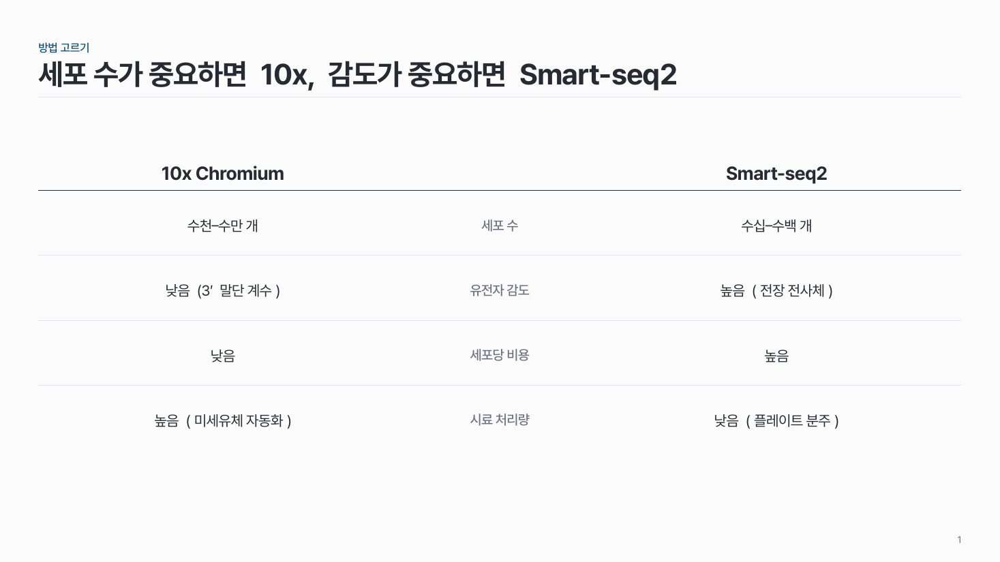
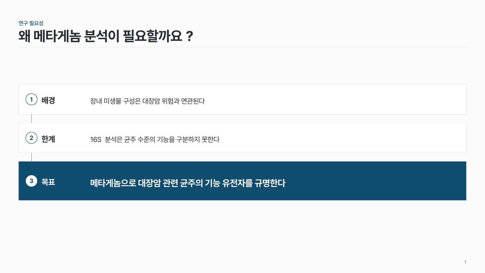
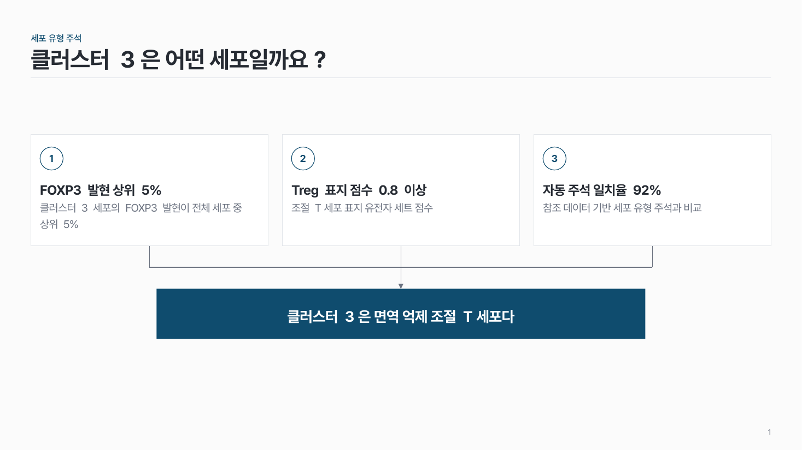
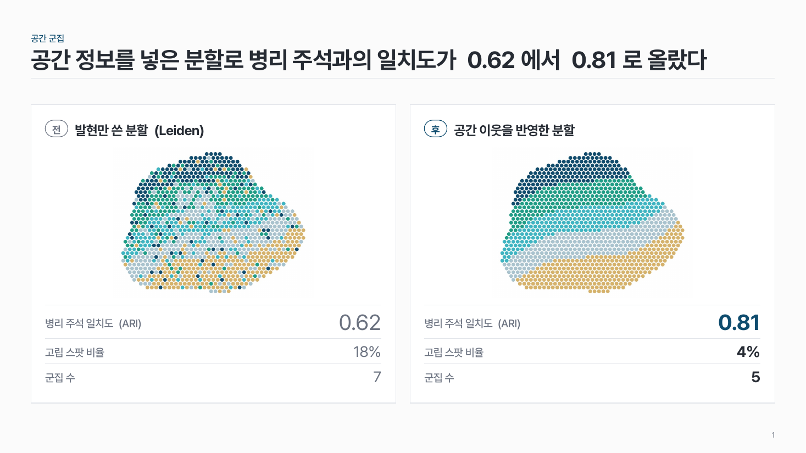
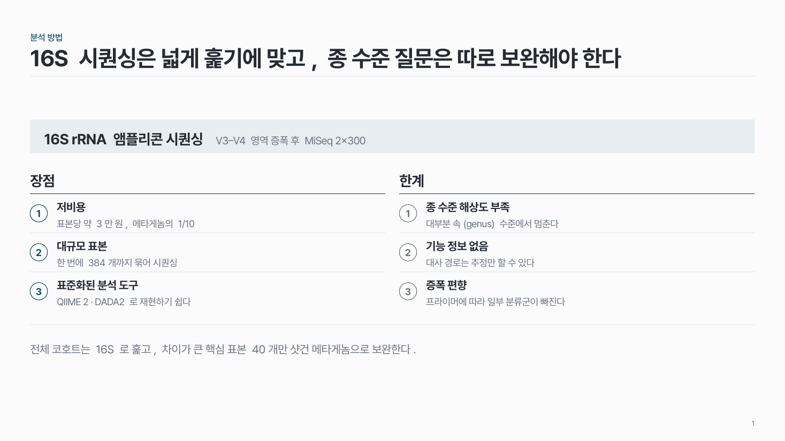
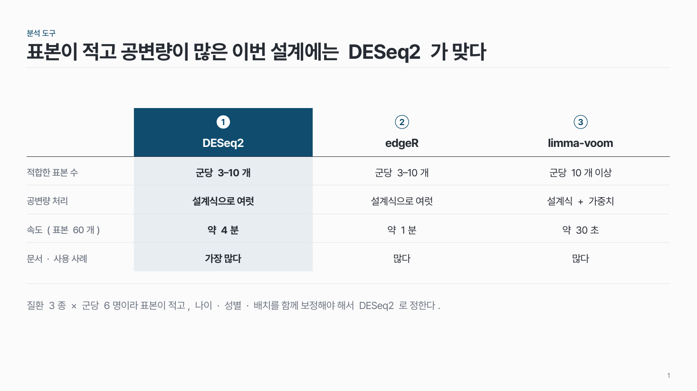
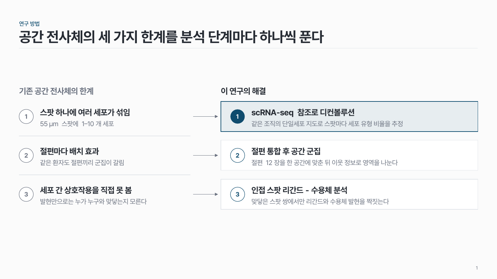
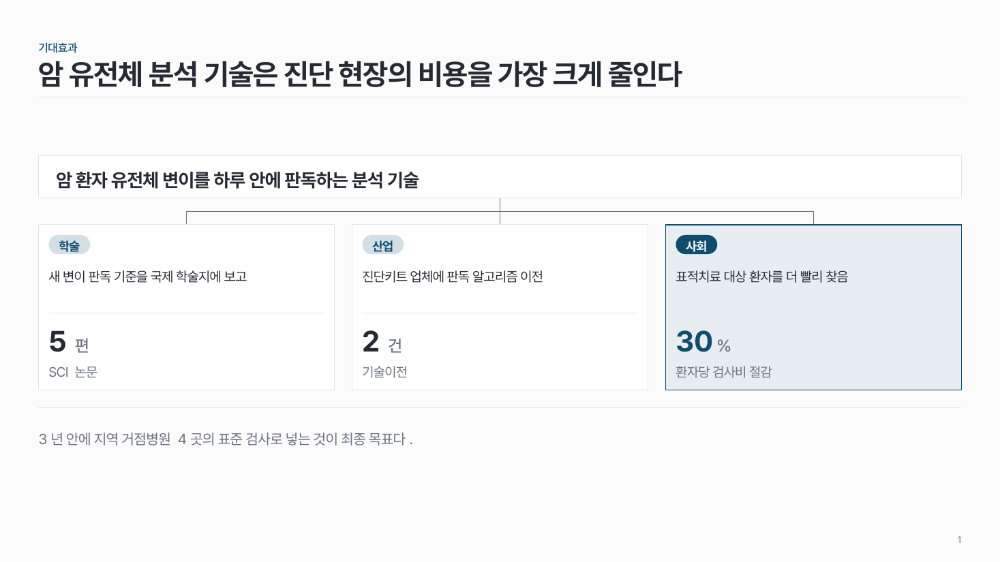

홈 › 비교·논리
비교·논리
비교하거나, 근거에서 결론으로 이끌고 싶어요
이럴 때
두 방법을 견주거나(기존 vs 제안), 연구가 왜 필요한지 설명하거나, 여러 근거로 한 결론을 받치거나, 큰 목표를 실행 과제로 나눌 때예요. 생각의 흐름이 메시지예요.
들어가는 것
- 비교면: 두 대상의 이름과 같은 항목 3–6개, 칸마다 짧은 값.
- 필요성이면: 알려진 것 → 부족한 것 → 이번에 할 것, 칸마다 한두 줄.
- 근거 → 결론이면: 독립된 근거 2–4개(키워드 + 수치)와 결론 한 문장.
- 목표 트리면: 목표 하나 → 전략 2–3개 → 전략마다 과제 2–3개.
강조할 것
결론·목표·제안 쪽 한 곳만 진하게. 근거와 기존 방법은 흰 칸과 회색 글씨로 둬요.
고르는 법
팁
- 슬라이드 제목에는 질문이나 평가 항목을, 결론 문장은 결론 칸에만 써요. 같은 문장을 두 번 쓰지 않아요.
- 기존 방법을 빨간 테두리나 가위표로 깎아내리지 않아요. 제안 쪽 머리만 색으로 강조해요.
- 근거 칸은 같은 크기로, 결론 칸은 근거 칸보다 넓게.
- 글이 많아 칸에 안 들어가면 같은 내용을 계층 표로 바꿔요.
추천 패턴

가운데 항목 비교 comp-02
가운데 열에 비교 항목을 쌓고, 양쪽에 두 대상의 값을 같은 높이로 놓아요.

배경 → 한계 → 목표 logic-03
가로 띠 세 칸을 위에서 아래로. 배경과 한계는 흰 칸, 목표는 진한 칸.

요인 → 결론 logic-01
근거 칸 2–4개에서 선이 모여 아래(또는 오른쪽)의 진한 결론 칸 하나로 이어져요.

목표 트리 logic-04
맨 위 목표 하나에서 전략 2–3개로, 전략마다 세부 과제 2–3개로 꺾은선을 내려요.

비포·애프터 comp-03
같은 대상의 전과 후를 같은 크기로 나란히. 지표는 줄을 맞추고 '후'의 핵심 값만 진하게.

장단점 comp-04
방법 하나의 장점과 한계를 같은 개수로 나란히. 보완 계획은 맨 아래 결론 줄에.

옵션 비교 comp-05
대안 3–4개를 같은 기준으로 견주고 추천 하나를 진하게. 기준은 맨 왼쪽 열에.

문제 → 해결 logic-02
기존 방법의 한계 2–3개와 우리 해결책을 1:1로 짝지어요. 해결 쪽을 넓게.

기대효과·파급 logic-05
핵심 성과 하나가 2–3개 영역으로 퍼지는 모양. 영역마다 근거 수치 하나.